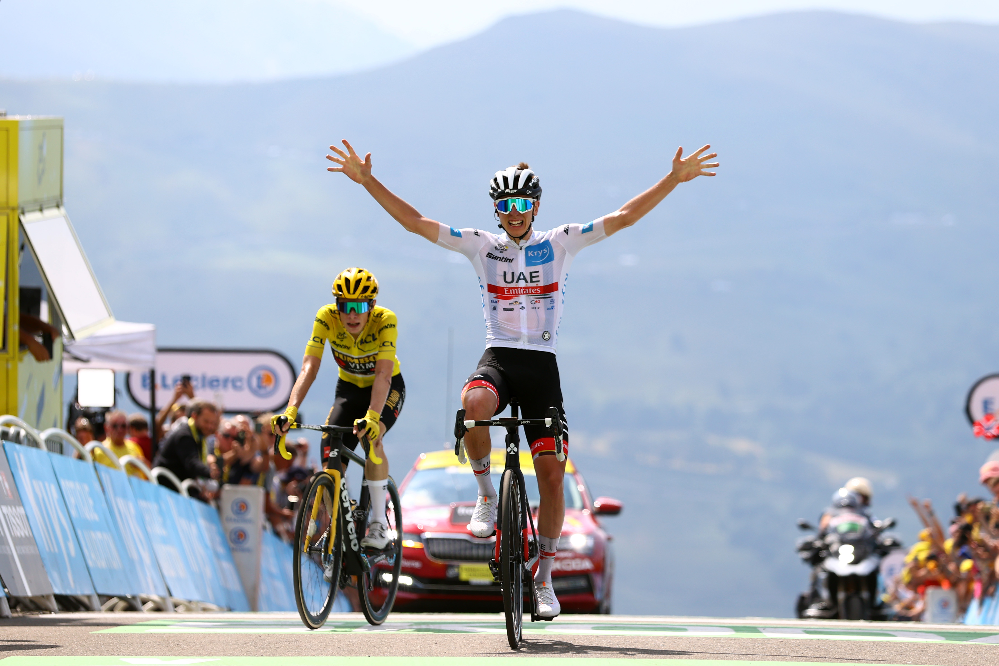

Climbers
Climbers excel on long, steep ascents in the mountains. They often decide the race on summit finishes.
The Tour brings together climbers, sprinters, and all-round general classification riders.
Climbers excel on long, steep ascents in the mountains. They often decide the race on summit finishes.
Sprinters target flat stages and explosive finishes, battling at high speeds for the stage win and points classification.

All-rounders are strong in the mountains and time trials, aiming for the overall Tour victory and the yellow jersey.